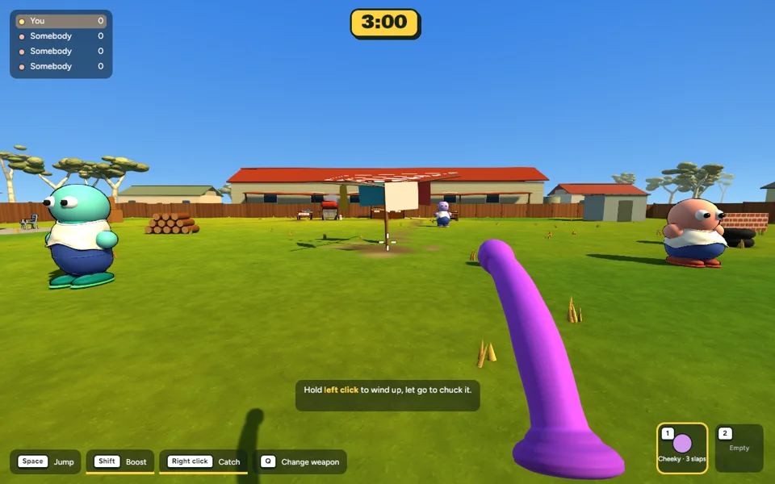
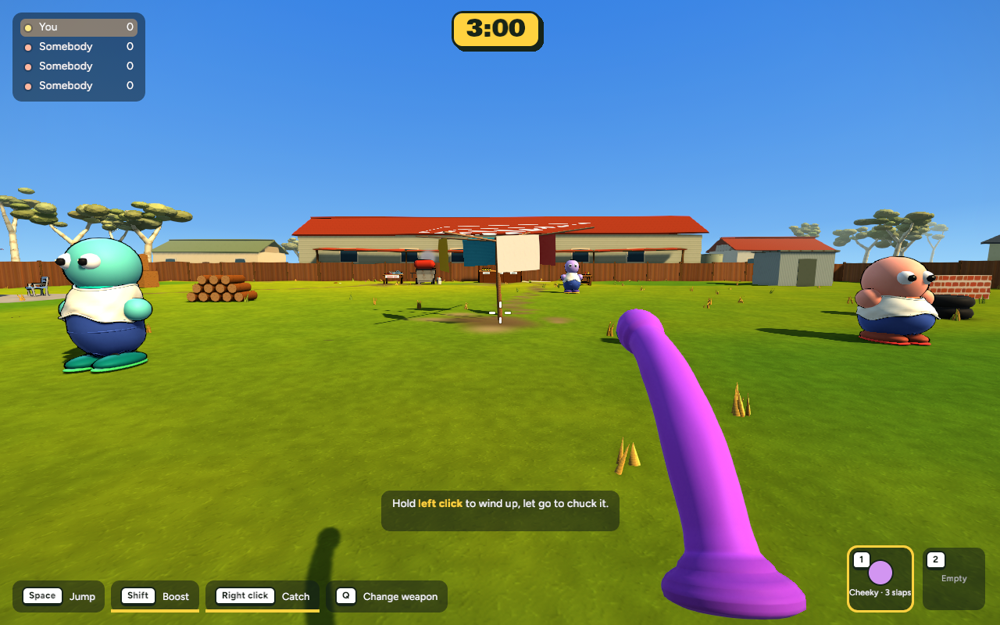

Actual game captures · 15 October 2026 · Ready for review, uncommitted.
A modest increase in upper-shaft bend and tip follow-through. The grip stays firm and the maximum spring bend stays capped. The silicone model, satin material, pool noodle and Q controls are preserved.
Watch the upper shaft while turning and just after stopping. Scripted inputs: idle 0–0.5s, walk 0.5–1.5s, run and turn 1.5–3s, stop and settle 3–5s. Camera position is fixed. These are rendered game frames, not concept images or a human playtest.


The drop sequence also completed. View the final settled frame.
182 app tests passed; one existing test ignored. Release build passed. Held and drop captures completed without errors. Mean performance: 8.114 → 8.083 ms (123.25 → 123.72 FPS); no meaningful regression in this sample. Mesh, material and image-memory counts are unchanged. This is a small visual tuning change; personal feel still needs your playtest.